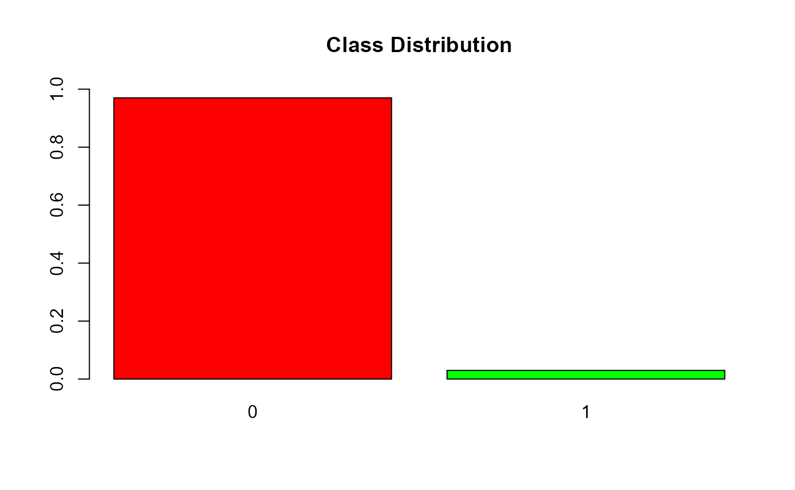
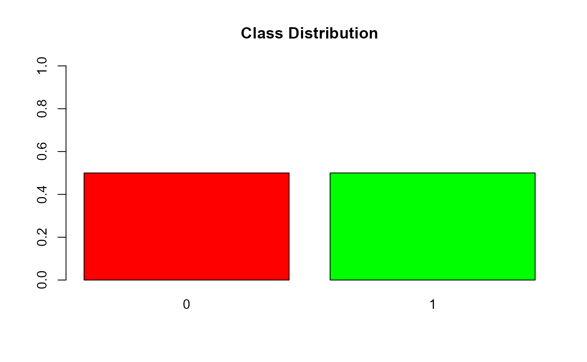

Mapping Triggers to Data
02_mapping_triggers_to_data.Rmd
library(SSSIHLCASFraudClassifyR)
library(dplyr)
library(lubridate)
library(smotefamily)
library(imbalance)
library(ROSE)
library(coop)
library(caret)
library(radiant.data)
library(glmnet)
options(scipen=999)
data(claims_data_sample, package = "SSSIHLCASFraudClassifyR")
data(trigger_data, package = "SSSIHLCASFraudClassifyR")
data(location_distance, package = "SSSIHLCASFraudClassifyR")
data(hospital_list, package = "SSSIHLCASFraudClassifyR")Mapping triggers to claims data
These trigger maps add additional columns 0’s and 1’s to the dataset.
“1”represents a flag raised by the trigger.
claim_amount_trigger_map
There is typically a predetermined amount agreed upon by the insurer and medical service provider for each procedure, particularly for cashless claim processing. If the claim amount exceeds this established procedure-specific amount, it will raise a flag.
data <-
trigger_data %>%
janitor::clean_names() %>%
dplyr::select(primary_procedure_code, package_amount_trigger)
data_w_triggers <-
claim_amount_trigger_map(
claims_file = claims_dataset,
claim_paid_field = "approved_allowed_amount",
triggers_file = data,
procedure_code = "primary_procedure_code",
procedure_amount_field = "package_amount_trigger"
)
summary(data_w_triggers$claim_amount_flag)
#> Min. 1st Qu. Median Mean 3rd Qu. Max.
#> 0.0000 1.0000 1.0000 0.9962 1.0000 1.0000hosp_days_trigger_map
A specific number of days that a claimant can be admitted to the hospital is deemed reasonable for each procedure. If the actual number of days spent in the hospital exceeds this reasonable duration for the given procedure, the function will raise a flag.
data <-
trigger_data %>%
janitor::clean_names() %>%
dplyr::select(primary_procedure_code,
admission_days_trigger)
data_w_triggers <-
hosp_days_trigger_map(
claims_file = data_w_triggers,
no_of_days_stayed = "no_of_days_stayed",
triggers_file = data,
procedure_code = "primary_procedure_code",
admission_days_trigger = "admission_days_trigger"
)
summary(data_w_triggers$hosp_days_flag)
#> Min. 1st Qu. Median Mean 3rd Qu. Max.
#> 0.0000 1.0000 1.0000 0.7871 1.0000 1.0000age_trigger_map
The triggers file includes age ranges that are considered reasonable for undergoing a particular medical procedure. This function raises a flag for all claimants whose age falls outside of this range. In order for this function to operate correctly, the age must be consistently specified in both the claims_file and the triggers_file.
data <-
trigger_data %>%
janitor::clean_names() %>%
dplyr::select(lower_age_limit, upper_age_limit, primary_procedure_code)
data$primary_procedure_code <-
as.character(data$primary_procedure_code)
data_w_triggers <-
age_trigger_map(
claims_file = data_w_triggers,
age_column_name = "patient_age",
triggers_file = data,
lower_age_limit = "lower_age_limit",
upper_age_limit = "upper_age_limit",
procedure_code = "primary_procedure_code"
)
summary(data_w_triggers$age_flag)
#> Min. 1st Qu. Median Mean 3rd Qu. Max.
#> 0 0 0 0 0 0gender_trigger_map
Certain medical procedures are specific to a particular gender. If a procedure is performed on a claimant of the wrong gender, this function raises a flag. For instance, a gynecological procedure performed on a male claimant would trigger a warning. To enable this function to operate correctly, the gender must be specified consistently in both the claims_file and the triggers_file.
data <-
trigger_data %>%
janitor::clean_names() %>%
dplyr::select(primary_procedure_code, gender_trigger)
data_w_triggers <-
gender_trigger_map(
claims_file = data_w_triggers,
gender_column_name = "gender_code",
triggers_file = data,
procedure_code = "primary_procedure_code",
gender_trigger = "gender_trigger"
)
summary(data_w_triggers$gender_flag)
#> Min. 1st Qu. Median Mean 3rd Qu. Max.
#> 0.00000 0.00000 0.00000 0.01805 0.00000 1.00000claim_count_trigger_map
The frequency of receiving a particular medical treatment is typically limited for policyholders, depending on the nature of the treatment. If a policyholder has undergone a particular treatment an unreasonably high number of times, it may be investigated for fraud. This function detects all policyholders who have received a given treatment excessively and raises flag.
data <-
trigger_data %>%
janitor::clean_names() %>%
dplyr::select(primary_procedure_code, claim_count_trigger)
data_w_triggers <-
claim_count_trigger_map(
claim_count = data_w_triggers,
claim_count_pa = "claim_count_pa",
claim_count_trigger_file = data,
procedure_code_field = "primary_procedure_code",
claim_count_trigger = "claim_count_trigger"
)
summary(data_w_triggers$claim_count_flag)
#> Min. 1st Qu. Median Mean 3rd Qu. Max.
#> 0.0000 0.0000 0.0000 0.4156 1.0000 1.0000close_prox_trigger_map
A claim is in close proximity if the treatment start date is very close to the policy commencement date. This function will raise a flag for such claims.
data <-
trigger_data %>%
janitor::clean_names() %>%
dplyr::select(primary_procedure_code, close_prox_days)
data_w_triggers <-
close_prox_trigger_map(
claims_file = data_w_triggers,
treatment_start_date = "treatment_start_date",
policy_commencement_date = "policy_commencement_date",
triggers_file = data,
procedure_code = "primary_procedure_code",
close_prox_days = "close_prox_days"
)
summary(data_w_triggers$close_prox_flag)
#> Min. 1st Qu. Median Mean 3rd Qu. Max.
#> 0.00000 0.00000 0.00000 0.03352 0.00000 1.00000treatment_date_validity_trigger_map
For each policy there is a commencement and termination date within which the claim event(treatment) should occur. If the treatment date is outside these dates, it will raise a flag.
data_w_triggers <-
treatment_date_validity_trigger_map(
claims_file = data_w_triggers,
treatment_start_date_field = "treatment_start_date",
policy_commencement_date_field = "policy_commencement_date",
policy_termination_date_field = "policy_termination_date"
)
summary(data_w_triggers$treatment_date_validity_flag)
#> Min. 1st Qu. Median Mean 3rd Qu. Max.
#> 0 0 0 0 0 0claim_reported_delay_trigger_map
For each policy there is a treatment start date and treatment end date. The claim should be reported within the permissible days after treatment end date (discharge date). If the claim reported date is outside the permissible limit it will raise a flag.
data_w_triggers <-
claim_reported_delay_trigger_map(
claims_file = data_w_triggers,
treatment_end_date_field = "treatment_end_date",
claim_reported_date_field = "claim_reported_date",
claim_delay_days = 15
)
summary(data_w_triggers$claim_reported_delay_flag)
#> Min. 1st Qu. Median Mean 3rd Qu. Max.
#> 0.00000 0.00000 0.00000 0.08356 0.00000 1.00000hospital_empanelled_trigger_map
Insurers typically select hospitals to serve their policyholders through a process known as empanelment. During this process, the insurer verifies that the hospital has the necessary facilities and agrees upon a tariff for each treatment. If the hospital is not included in the list of empaneled hospitals, a flag will be raised.
data_w_triggers <-
hospital_empanelled_trigger_map(
claims_file = data_w_triggers,
hospital_id_field = "medical_service_provider_id",
empanelled_hospitals_list = hospital_list,
empanelled_hospital_id = "hosp_id"
)
summary(data_w_triggers$hospital_empanelled_flag)
#> Min. 1st Qu. Median Mean 3rd Qu. Max.
#> 0 0 0 0 0 0hospital_distance_trigger_map
It is reasonable to anticipate that a policyholder will receive treatment at the nearest hospital. If the distance between the policyholder’s residence location and the hospital location exceeds a predetermined threshold, this function will raise a flag.
data_w_triggers <-
hospital_distance_trigger_map(
claims_file = data_w_triggers,
residence_location_field = "residence_location",
hospital_location_field = "hospital_location",
hospital_distance_file = location_distance,
residence_location_map = "location_1",
hospital_location_map = "location_2",
hospital_distance_field = "distance",
distance_threshold = 100
)
summary(data_w_triggers$hospital_distance_flag)
#> Min. 1st Qu. Median Mean 3rd Qu. Max.
#> 0.0000 0.0000 0.0000 0.2882 1.0000 1.0000Preparing Input data with triggers
Reducing dimensionality of character columns
We removed the columns that do not contribute in predicting the fraud.
In columns with too many categories only the top values which contributed the most were considered and remaining categories were taken as one category. This had to be done since encoding such categorical columns would bloat the data set.
## Considering top 20 unique values from certain columns with large unique values
# medical service provider id
mspid <-
data_w_triggers %>%
group_by(medical_service_provider_id) %>%
count() %>%
arrange(desc(n))
sum(mspid[1:20, 2]) / sum(mspid[, 2])
#> [1] 0.3289588
data_w_triggers <-
data_w_triggers %>%
mutate(
medical_service_provider_id =
ifelse(
medical_service_provider_id %in% mspid[1:20, 1]$medical_service_provider_id,
medical_service_provider_id,
"Others"
)
) %>%
dplyr::select(
-c(
insured_id,
primary_diagnosis_code,
treatment_start_date,
treatment_end_date,
policy_commencement_date,
policy_termination_date,
claim_reported_date
)
)Performing OneHot Encoding to Non-numeric columns
In this dataset, we had several categorical columns which cannot be directly used in machine learning models, since machine learning models usually require numerical inputs.
Hence one hot encoding is used to convert these categorical columns into numerical format that can be used in machine learning models.
dmy <- dummyVars(" ~ .", data = data_w_triggers, fullRank = TRUE)
data_w_triggers <-
data.frame(predict(dmy, newdata = data_w_triggers))Removing features with SD 0 and removing trigger information features
All the columns that were used to generate the flag columns are no longer needed.
Hence they are removed from the dataset.
Feature scaling
Feature scaling is an important step that helps to make sure all the input features are on the same scale.
It’s important because some machine learning algorithms assume that all the features have the same scale, and features with big values might be given more importantance during the learning process.
Checking for class data Imbalance
Since fraud is a rare occurrence, the proportion of fraud cases is much lesser than that of non fraud cases.
We first check for the presence of such class imbalance in this dataset.
summary(data_w_triggers$fraud)
#> Min. 1st Qu. Median Mean 3rd Qu. Max.
#> 0.00000 0.00000 0.00000 0.02988 0.00000 1.00000
barplot(
prop.table(table(data_w_triggers$fraud)),
col = rainbow(3),
ylim = c(0, 1),
main = "Class Distribution"
)
Splitting train and test data
Splitting a dataset into a training set and a test set is crucial to evaluate the performance of a model on new, unseen data.
The training set is used to train the model, while the test set is used to evaluate its performance.
set.seed(123)
data_w_triggers =
data_w_triggers[, c(
"medical_service_provider_idhospital32",
"medical_service_provider_idhospital185",
"medical_service_provider_idhospital58",
"primary_procedure_codeM100068",
"medical_service_provider_idhospital118",
"medical_service_provider_idhospital31",
"hospital_locationlocation22",
"medical_service_provider_idhospital181",
"medical_service_provider_idhospital247",
"medical_service_provider_idhospital14",
"medical_service_provider_idhospital71",
"hospital_locationlocation20",
"patient_age",
"medical_service_provider_idhospital127",
"medical_service_provider_idhospital49",
"hospital_locationlocation15",
"medical_service_provider_idhospital188",
"hospital_locationlocation12",
"hospital_locationlocation13",
"primary_procedure_codeM100008",
"hospital_locationlocation19",
"hospital_locationlocation14",
"primary_procedure_codeM100009",
"primary_procedure_codeM700004",
"no_of_days_stayed",
"residence_locationlocation5",
"hospital_locationlocation5",
"approved_allowed_amount",
"hospital_locationlocation17",
"primary_procedure_codeU100",
"fraud",
"claim_amount_flag",
"hosp_days_flag",
"gender_flag",
"claim_count_flag",
"close_prox_flag",
"distance",
"hospital_distance_flag",
"claim_duration_days",
"claim_reported_delay_flag"
)]
# randomly split data in r
TrainingIndex = sample(seq_len(nrow(data_w_triggers)), size = 0.7 * nrow(data_w_triggers))
data_w_triggers_train <-
data_w_triggers[TrainingIndex, ] # Training Set
data_w_triggers_test <- data_w_triggers[-TrainingIndex, ] # Test SetAdjusting data for imbalance
As seen above, there is a class imbalance in this dataset.
Adjusting the data for the imbalance is necessary in order to ensure that the machine learning models are not biased towards the majority class.
We used oversampling methods to handle the data imbalance to ensure that there is no loss of data.
ADASYN
newData <-
ADAS(X = data_w_triggers_train,
data_w_triggers_train$fraud,
K = 5)
adasyn_w_triggers_train <-
newData$data %>%
dplyr::select(-c("class")) %>%
mutate(fraud = as.factor(fraud))
adasyn_w_triggers_train %>%
group_by(fraud) %>%
summarise(count = n()) %>%
print()
#> # A tibble: 2 × 2
#> fraud count
#> <fct> <int>
#> 1 0 74126
#> 2 1 74088
adasyn_w_triggers_test <-
ADAS(X = data_w_triggers_test,
data_w_triggers_test$fraud,
K = 5)$data %>%
dplyr::select(-c("class")) %>%
mutate(fraud = as.factor(fraud))
adasyn_w_triggers_test %>%
group_by(fraud) %>%
summarise(count = n()) %>%
print()
#> # A tibble: 2 × 2
#> fraud count
#> <fct> <int>
#> 1 0 31804
#> 2 1 31844SMOTE
nrow(data_w_triggers_train) / sum(data_w_triggers_train$fraud)
#> [1] 33.10307
smote_w_triggers_train <-
SMOTE(
data_w_triggers_train,
data_w_triggers_train$fraud ,
K = 5,
dup_size = 18
)$data %>%
dplyr::select(-c("class")) %>%
mutate(fraud = as.factor(fraud))
smote_w_triggers_train %>%
group_by(fraud) %>%
summarise(count = n()) %>%
print()
#> # A tibble: 2 × 2
#> fraud count
#> <fct> <int>
#> 1 0 74126
#> 2 1 43871
nrow(data_w_triggers_test) / sum(data_w_triggers_test$fraud)
#> [1] 34.33753
smote_w_triggers_test <-
SMOTE(
data_w_triggers_test,
data_w_triggers_test$fraud ,
K = 5,
dup_size = 18
)$data %>%
dplyr::select(-c("class")) %>%
mutate(fraud = as.factor(fraud))
smote_w_triggers_test %>%
group_by(fraud) %>%
summarise(count = n()) %>%
print()
#> # A tibble: 2 × 2
#> fraud count
#> <fct> <int>
#> 1 0 31804
#> 2 1 18126MWMOTE
mwmote_w_triggers_train <-
mwmote(
dataset = data_w_triggers_train,
numInstances = nrow(data_w_triggers_train) - 2 * sum(data_w_triggers_train$fraud),
classAttr = "fraud",
kNoisy = 5,
kMajority = 3,
kMinority = 1,
threshold = 5,
cmax = 2,
cclustering = 3
) %>%
bind_rows(data_w_triggers) %>%
mutate(fraud = as.factor(fraud))
mwmote_w_triggers_train %>%
group_by(fraud) %>%
summarise(count = n()) %>%
print()
#> # A tibble: 2 × 2
#> fraud count
#> <fct> <int>
#> 1 0 105930
#> 2 1 75080
mwmote_w_triggers_test <-
mwmote(
dataset = data_w_triggers_test,
numInstances = nrow(data_w_triggers_test) - 2 * sum(data_w_triggers_test$fraud),
classAttr = "fraud",
kNoisy = 5,
kMajority = 3,
kMinority = 1,
threshold = 5,
cmax = 2,
cclustering = 3
) %>%
bind_rows(data_w_triggers) %>%
mutate(fraud = as.factor(fraud))
mwmote_w_triggers_test %>%
group_by(fraud) %>%
summarise(count = n()) %>%
print()
#> # A tibble: 2 × 2
#> fraud count
#> <fct> <int>
#> 1 0 105930
#> 2 1 34113ROSE
#chose seed 100
#The N variable is the total number that will be generated
#N should essentially be sum of both fraud and non fraud
rose_w_triggers_train <-
ovun.sample(
fraud ~ . ,
data = data_w_triggers_train,
method = "over",
N = (
nrow(data_w_triggers_train) - sum(data_w_triggers_train$fraud)
) * 2,
seed = 100
)$data %>%
mutate(fraud = as.factor(fraud))
table(rose_w_triggers_train$fraud)
#>
#> 0 1
#> 74126 74126
barplot(
prop.table(table(rose_w_triggers_train$fraud)),
col = rainbow(3),
ylim = c(0, 1),
main = "Class Distribution"
)
#chose seed 100
#The N variable is the total number that will be generated
#N should essentially be sum of both fraud and non fraud
rose_w_triggers_test <-
ovun.sample(
fraud ~ . ,
data = data_w_triggers_test,
method = "over",
N = (nrow(data_w_triggers_test) - sum(data_w_triggers_test$fraud)) * 2,
seed = 100
)$data %>%
mutate(fraud = as.factor(fraud))
table(rose_w_triggers_test$fraud)
#>
#> 0 1
#> 31804 31804
barplot(
prop.table(table(rose_w_triggers_test$fraud)),
col = rainbow(3),
ylim = c(0, 1),
main = "Class Distribution"
)